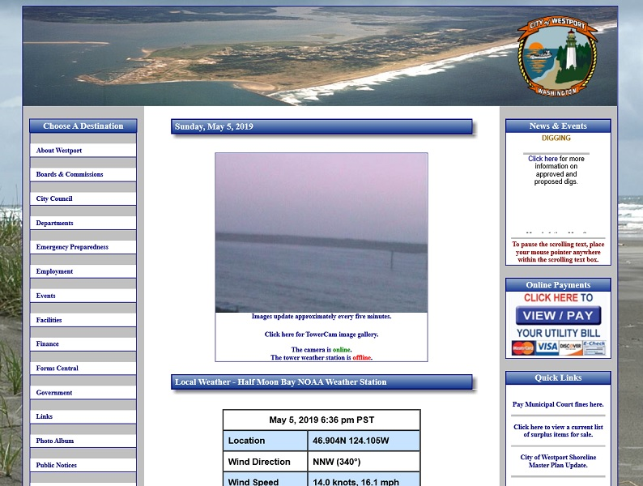
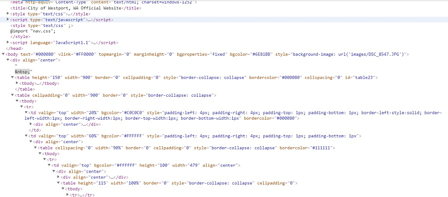
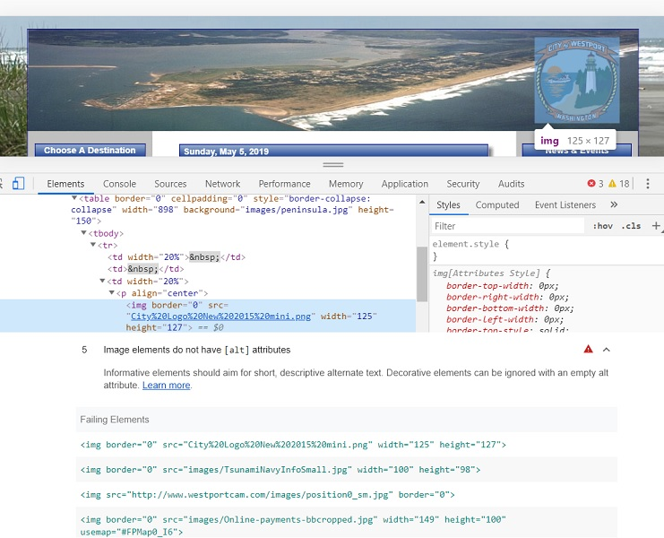

Intro
In this week’s accessibility study, I will be looking at the website of Westport, WA . Westport is a small town that is located on the coast of southwest Washington that I grew up in when I was younger. I thought it would be interesting to do an accessibility study on a website that serves the general public in providing information and resources, but I didn’t want to do one on a larger city like Seattle. Rather, a smaller town like Westport would probably have more issues with website accessibility than a city with the ability to allocate more resources to address the concerns that come up in this week’s study.
 Looks like what you would expect from a small town website.In order to help me find and analyze this website, I used the Web Accessibility Evaluation Tool (WAVE) and Chrome’s Lighthouse tool to run audits and cross referenced them with the Web Content Accessibility Guidelines (WCAG) 2.1. I found that the website for Westport, WA has some glaring issues regarding content. I found that 1) the HTML lacked any type of structure through the lack of headings and 2) images, some links, and forms lacked alternative text. These issues could severely impact the way a screen reader presents this information to a user.
Headings
One of the things that stuck out the most when I ran WAVE and Lighthouse was the lack of structure, specifically there are no headings. I can understand that if you’re not using any kind of assisted screen reader, it would be easy to dismiss the lack of headings in the HTML structure. Having studied web development for a few quarters, I know that headings (e.g. h1, h2, h3, etc.) provide structure to a web page.
Headings provides a hierarchy to sections of a page which is a crucial component of delivering information, not just stylistically but also in a reasonable manner. In the case of assisted technology, it helps the user navigate through the content of the page. In this website that would be near impossible due to the structure of the HTML file. Most of the content is written in the table tag and upon further review in Chrome’s dev tools, it’s a hot mess trying to find any kind of structure.
I’ve gone through a few of the pages and links and have yet to find any p tags. All the text is rendered through tables, lists, or link tags. I can’t imagine how a screen reader would interpret this page.
 What is going on in this HTML file?Alternative Text
On the home page, there are six images that do not have alt tags to provide a short description. This is also the case with a form tag and a few links. This may seem not seem like a big deal the browser will be unable to relay what the content of these things are due to a lack of text descriptions. While non-text content is visually presented to most users, it provides a huge road block to those that visually impaired. Alternative text is a means to remedy this issue.
 Top: Example of an image lacking alternative text. Bottom: Lighthouse audit listing all instances of a lack of alternative text.There are a decent amount of important links, some that are linked by an image, that lack alternative text. For instance, Tsunami preparedness and info was always a big subject when I was living in Westport and it would be hard for a screen reader to be able to convey that an image links to important information. The user would have to use contextual clues to “guess” that the image linked to information related to Tsunamis due to being in a table that included Tsunami in the description. This is bad design, users shouldn’t have to guess where a link is going to take them.
Conclusion
While I only focused on two accessibility issues on this website their impact goes beyond. The lack of structure and alternative text descriptions impacts a user’s ability to perceive, operate, and understand a website. When I decided to comb through the HTML file, I was overwhelmed by what was being presented to me. I couldn’t help but think that the website should have been set up into different portions such as headings, navigation sections, and footers. I noticed that styling was also intermixed with the HTML which also impacted my ability to read and make sense of the HTML structure. If a machine is going to comb through what I just read and spit that back out to the user, the website would come off as off-putting. The website, while visually dated, is something that the average user can navigate through but if someone where to rely on assistive technology, it would be something else.
My recommendation is to add some type of structure to the HTML and add alternative texts to all links and images. The content of the actual page should be marked up with headings as well to denote a hierarchy within the page. I think it would help if the HTML file was sectioned in a way that the right and left navigation where separated as their own divs and the main content was marked up with headers. The tables are unnecessary and add to the confusion of the HTML file. By cleaning up the HTML, it will be a lot clearer for screen readers to read and present to users.